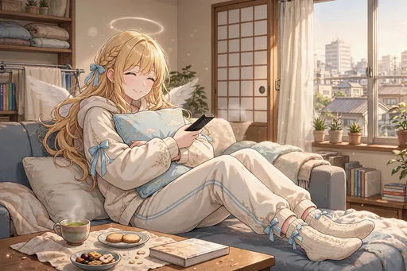
ノーマル
部屋着でゴロゴロする休日
部屋着でゴロゴロする休日の場面。天使のドレスから部屋着まで、「蝕まれ度」は服装にも表れています。第5弾、すっかり日本の生活者になった日々の始まりです。
第5弾「すっかり日本の生活者編」のカード全30種です。部屋着の休日や大掃除、確定申告まで、生活者としての日常の場面です。
カードの画像はWeb鑑賞用サイズです。原画の高解像度イラストは、この弾のイラストパックでご覧いただけます。
この弾の所持 0 / 30種（0%）― あと30種で、この弾はコンプリートです
カードの画像はWeb鑑賞用サイズです。原画の高解像度イラストは第5弾『すっかり日本の生活者編』のパック紹介ページからBOOTHのパックでご覧いただけます。ガチャで所持しているカードには「所持 ×N」と表示されます。

ノーマル
部屋着でゴロゴロする休日の場面。天使のドレスから部屋着まで、「蝕まれ度」は服装にも表れています。第5弾、すっかり日本の生活者になった日々の始まりです。

レア
部屋で推しのライブ映像鑑賞会を開く場面。一人でもペンライトは欠かせません。推し活が日常に根づいた証拠です。
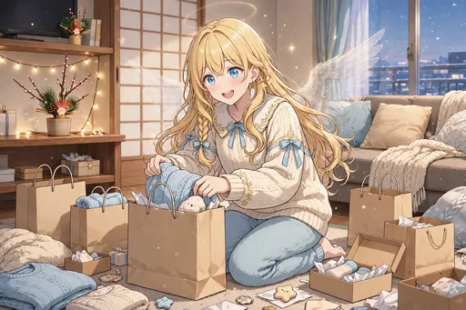
ノーマル
福袋の戦利品を開封する場面。第3弾でも楽しんだ福袋は、もはや新年の恒例行事になりました。
ノーマル
初売りの行列に並ぶ場面。お目当てのために早起きするのも、生活者の知恵と根性です。
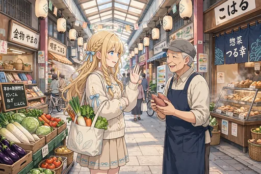
ノーマル
商店街の顔なじみになった場面。店主との何気ない会話が、暮らしの豊かさそのものです。降臨当初とは見違える馴染みぶり。
ノーマル
推しの新曲のフラゲ日に浮かれる場面。発売前日に手に入れる高揚感は、ファンの特権です。
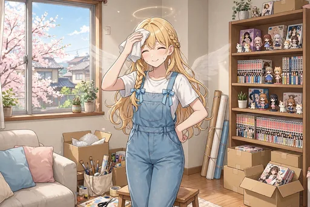
ノーマル
新生活に向けて模様替えをする場面。家具の配置ひとつで気分が変わる、暮らしの楽しみです。
ノーマル
ゴールデンウィークの予定表を作る場面。書き込まれた予定は、ほぼ推し活で埋まっています。計画の段階から楽しそうです。
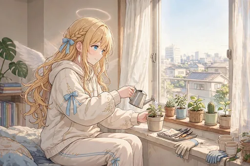
ノーマル
観葉植物を育て始める場面。地上の暮らしに「育てるもの」が増えました。小さな緑との新しい日々です。
ノーマル
初めての人間ドックに緊張する場面。健康を守る仕組みも、日本の暮らしの一部です。結果を待つ間は、天使もそわそわしてしまいます。
ノーマル
盆踊りの輪に参加する場面。地域の人たちと一緒に踊る夏の夜は、暮らしに根ざした楽しみです。
ノーマル
台風の日に備蓄をチェックする場面。水や食料を確認する姿は、立派な生活者の備えです。

レア
ハロウィンに本気のコスプレで臨む場面。第3弾の「天使コス（本物）」から進化して、今度は本気の仮装です。準備にも余念がありません。
ノーマル
年賀状を羽根ペンで書く場面。天使ならではの筆記具で、新年の挨拶をしたためます。一枚ずつ心を込める姿がらしい一枚。
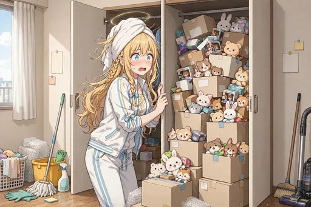
ノーマル
大掃除で「買っただけのグッズ」が次々出てくる場面。日本橋通いの成果と反省が、年末に一気に押し寄せます。
レア
除夜の鐘と年越しの瞬間を迎える場面。静かな年明けに、新しい一年への願いを込めています。
ノーマル
初夢に推しが出てくる場面。目覚めたあとの幸福感まで含めて、新年の贈り物のような夢です。
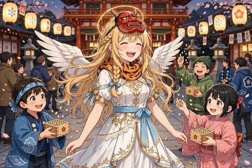
ノーマル
節分の豆まきで鬼役をやる場面。天使が鬼役という珍しい光景ですが、みんなを楽しませるためなら一肌脱ぎます。
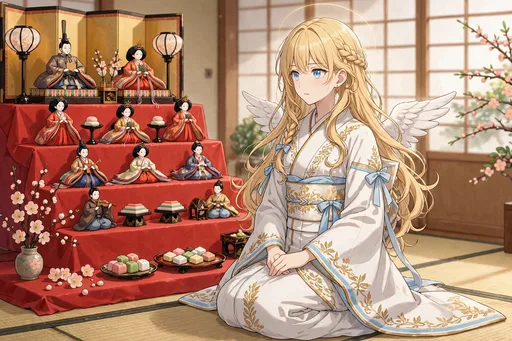
ノーマル
ひな人形と並んで座る場面。日本の年中行事の静かな美しさに触れる、春先の一枚です。
ノーマル
確定申告の書類に苦戦する場面。生活者としての現実的な壁に、天使も頭を抱えています。
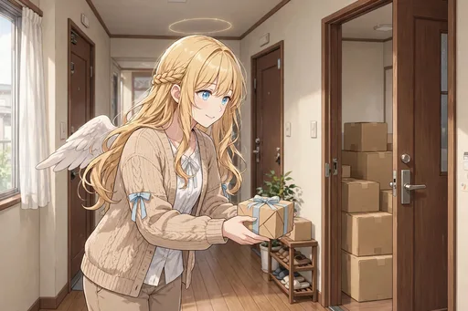
ノーマル
引っ越しの挨拶で粗品タオルを配る場面。ご近所づきあいの基本を、日本の習慣どおりにこなしています。
ノーマル
新年度の決意とともに手帳を新調する場面。新しい手帳に書く最初の予定から、一年が始まります。
ノーマル
天界への定期報告書に、日本のことばかり書いてしまう場面。第1弾で寝落ちしていた頃よりは進歩しましたが、中身はすっかり日本の話題です。
ノーマル
天界の上司に呼び出されて焦る場面。報告書の内容に心当たりがありすぎて、少し冷や汗をかいています。
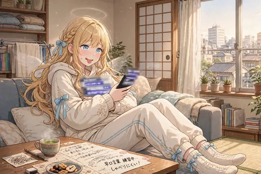
ノーマル
日本語の早口言葉に挑戦する場面。関西弁まで混じり始めた言葉の「蝕まれ度」が、また一段上がっています。
レア
帰還の話が出て、街を見渡す場面。馴染んだ街並みを前に、複雑な気持ちがよぎります。第5弾の物語が大きく動く一枚。
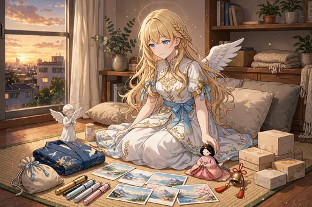
レア
一年間の思い出の品々を並べる場面。戦利品も日常の小物も、全部が地上での日々の証しです。
レア
大阪の夕焼けに向かって「ただいま」とつぶやく場面。任務の地だった街が、いつの間にか「帰る場所」になっていました。
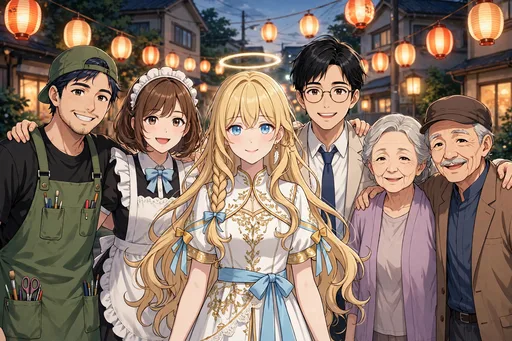
レア
仲良くなった人々との集合写真風の一枚。地上で結ばれた絆が、この物語の何よりの成果です。

激レア
降臨から一周年、すっかり馴染んだ笑顔のキービジュアル。私服姿に穏やかな表情で、第5弾と物語の歩みを締めくくります。それでも「おつかれさまです」の優しさは変わりません。